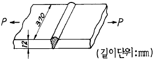
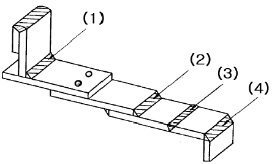

용접기능장 (2002-04-07 기출문제)
1과목: 임의구분
1. 아크용접시 용접봉의 용접금속 이행 형식이 될 수 없는 것은?
- 단락형
- 스프레이형
- 핀치 효과형
- 중력 효과형
(정답률: 73%)

2. 용접기의 핫스타트(hot start)장치의 이점이 아닌 것은?
- 아크발생을 쉽게 한다.
- 크레이터 처리를 잘 해준다.
- 비드(bead)의 이음자리를 개선한다.
- 아크 발생 초기의 비드 용입을 양호하게 한다.
(정답률: 74%)
3. 정격 2차 전류 300A, 정격사용률 40%의 아크 용접기로써 실제로 200A의 전류로 용접한다면 허용 사용률은?
- 20%
- 60%
- 90%
- 120%
(정답률: 69%)
4. 고산화 티탄계의 연강용 피복아크 용접봉을 나타낸 것은 ?
- E4301
- E4313
- E4311
- E4316
(정답률: 64%)
5. 용접작업시 위보기 자세에 사용되지 않는 운봉방법은?
- 백 스텝
- 직선형
- 부채꼴 모양
- 삼각형
(정답률: 67%)
6. 일반적으로 아크 드라이브(Arc drive)의 전압(V)은 몇 V로 고정되어 있는가?
- 10V
- 16V
- 20V
- 30V
(정답률: 63%)
7. 용접차광렌즈(Welding lens)의 차광능력의 등급을 차광도 번호라 한다. 100A 이상 300A 미만의 아크 용접 및 절단 등에 쓰이는 차광도 번호는 얼마인가?
- 4 - 5
- 7 - 8
- 10 - 12
- 14 - 15
(정답률: 89%)
8. 가스절단 결과의 판정은 다음 사항을 중요시 하는 데,그 중 틀린 사항은?
- 드래그가 일정할 것
- 절단면의 윗 모서리가 예리할 것
- 슬래그의 이탈성이 나쁠 것
- 절단면이 깨끗하며 드래그 흠이 없을 것
(정답률: 93%)
9. 잠호용접(SAW)용 용제(Flux)의 역할을 열거한 것이다. 틀린 것은?
- 용착금속의 탈산작용
- 전류이행 능력의 향상
- 용접후 슬래그의 이탈성 향상
- 합금원소의 첨가
(정답률: 62%)
10. MIG용접에서 용융금속의 이행 형태는 여러가지 요인에 의해 결정된다. 해당되지 않는 것은?
- 전류의 형태와 크기
- 전류밀도
- 용접봉의 성분
- 용접자세
(정답률: 68%)
11. MIG용접에서 아크의 자기제어를 위해 주로 많이 사용되는 전원특성은?
- 정전압특성
- 정저항특성
- 수하특성
- 역극성
(정답률: 64%)
12. 이산화탄산가스(CO2 gas) 아크용접에서 복합 와이어 (combined wire)중 와이어가 노즐(nozzle)을 나온 부분에, 자성 플럭스(magnetic powder flux)가 부착하는 형태의 용접법은?
- 유니온 아크법(union arc process)
- 아코스 아크법(arcos arc process)
- 휴스 아크 CO2법(fus arc CO2 process)
- NCG법
(정답률: 58%)
13. 플럭스 코어 아크용접에 대한 설명중 틀린 것은?
- 전류가 적정 범위 내에서 증가함에 따라 비드 높이는 높아지고 비드 폭은 넓어진다.
- 아크전압이 증가함에 따라 용접비드 높이는 납작하고 폭은 넓어지게 된다.
- 용접속도가 증가함에 따라 비드 높이는 낮아지고 비드 폭은 증가한다.
- 노즐 각도를 변화시키는 것은 또한 비드의 높이와 폭을 변화시킬 수 있다.
(정답률: 56%)
14. 플라스마(plasma)를 구성하는 물질이 아닌 것은?
- 양이온 (positive ions)
- 중성자 (neutral atoms)
- 음전자 (negative electrons)
- 양전자 (positive electrons)
(정답률: 55%)
15. 다음 용접과정중 고진공 용기(Vacuum Chamber) 속에서 수행되는 용접은?
- 플라즈마 아크용접
- 엘렉트로 슬랙용접
- 전자비임 용접
- 마찰용접
(정답률: 67%)
16. 일렉트로 슬래그(ELECTRO SLAG) 용접에서 용접 조건이 모재의 용입 깊이에 미치는 영향 중 맞게 설명한 것은?
- 용접속도가 빠르면 용입이 깊어진다.
- 플럭스(FLUX)의 전기전도성이 크면 용입이 깊어진다.
- 용접 전압이 높으면 용입이 깊어진다.
- 용접 전압이 낮으면 용입이 깊어진다.
(정답률: 72%)
17. 테르밋 용접(thermit welding)에서 테르밋은 무엇의 혼합물인가?
- 붕사와 붕산의 분말
- 알루미늄과 산화철의 분말
- 알루미늄과 마그네슘의 분말
- 규소와 납의 분말
(정답률: 84%)
18. 다음중 원자수소 용접에 이용되는 용접열은 얼마나 되는 가?
- 2000 - 3000℃
- 3000 - 4000℃
- 4000 - 5000℃
- 5000 - 6000℃
(정답률: 62%)
19. 다음의 용접작업 중 귀마개(耳栓)를 착용해야 하는 경우는?
- 일렉트로 가스용접[electro gas welding]
- 플래시 버트 용접[flash butt welding]
- 전자비임 용접[electron beam welding]
- 플럭스 코어드 용접[flux cored welding]
(정답률: 69%)
20. 용접중에 전격의 위험을 방지하기 위하여 사용되는 전격 방지기에 관한 설명이 틀리는 것은?
- 작업을 쉬는중에 용접기의 1차 무부하 전압을 25V로 유지한다.
- 용접봉을 접촉하는 순간 전자개폐기가 닫힌다.
- 용접봉을 접촉하는 순간 2차 무부하전압이 70 - 80V로 되어 교류아크가 발생된다.
- 용접기에 전격방지기를 설치한다.
(정답률: 60%)
2과목: 임의구분
21. 철강재료의 용접에서 균열을 일으키는데 가장 예민한 원소는?
- C
- Si
- S
- Mg
(정답률: 54%)
22. 알루미늄을 용접하고자 할 때, 예열을 하는 경우가 있다. 그 이유는?
- Al2O3산화막을 제거하기 위해
- 열 전도성이 높기 때문에
- 청정작용(Cleaning action) 때문에
- 순도가 낮은 불활성가스의 사용이 가능하기 때문에
(정답률: 38%)
23. 금속의 용접성(weldability)에 영향을 미치지 않는 것은?
- 탄소 함유량(carbon content)
- 열전도(thermal conductivity)
- 인장강도(tensile strength)
- 용융점(melting point)
(정답률: 46%)
24. 승용차의 차체(Chassis, 샤시)에 고장력 강을 사용해야 한다는 주장이 있다. 고장력강의 필요성은 무엇이 주요한 이유인가?
- 연강과 동일한 강도를 유지하면서 경량화가 가능하기 때문에
- 부식에 견디는 능력이 우수하기 때문에
- 소성가공이 용이하기 때문에
- 외관이 미려하기 때문에
(정답률: 74%)
25. 용접부에 생기는 잔류응력을 없애려면 어떻게 하면 되는가?
- 담금질을 한다.
- 뜨임을 한다.
- 불림을 한다.
- 풀림을 한다.
(정답률: 78%)
26. 가열로 안에서 강선재를 900 - 1000℃로 급속히 가열하고 연욕노(鉛浴爐,lead bath)를 통과시켜 380 - 550℃에서 항온변태를 일으키게 하여 소르바이트(Sorbite)나 미세펄 라이트(fine pearlite)조직으로 하는, 일반 연강재료에 대하여 처리하는 방법은?
- 템퍼링
- 노멀라이징
- 패턴팅
- 어닐링
(정답률: 42%)
27. 풀림(annealing)의 목적이 아닌 것은?
- 단조,주조,기계가공에서 생긴 내부 응력 제거
- 가공 또는 공작에서 경화된 재료의 연화
- 금속 결정입자의 조대화
- 열처리로 인하여 경화된 재료의 연화
(정답률: 74%)
28. 두께가 각기 다른 여러가지 용접물을 노(爐)내에서 응력제거 열처리를 하고자 한다. 열처리 방법중 알맞는 것은?
- 가장 두꺼운 용접물을 기준으로 열처리 시간을 정한다.
- 용접물의 평균 두께를 측정하여 열처리 시간을 정한다.
- 두께별로 분류하여 2단계(2 step method)로 열처리 한다.
- 두께가 1 [inch] 이상 차이나는 것은 분류하여 따로 열처리 하도록 한다.
(정답률: 59%)
29. 다음 그림과 같이 맞대기 용접하였을 경우 인장하중 P = 4800[㎏f]에 대하여 용접부에 발생하는 인장응력은 몇 [kgf/㎜2]인가?

- 1.08
- 10.81
- 100.81
- 1000.81
(정답률: 59%)
30. 맞대기 용접의 강도계산은 어느 부분을 기준으로 정하여 행하는가?
- 다리길이
- 목두께
- 루트간격
- 홈깊이
(정답률: 75%)
31. 그림에서 필릿 용접 이음이 아닌 것은?

- (1)
- (2)
- (3)
- (4)
(정답률: 78%)
32. 용접 순서의 일반적인 설명으로 틀린 것은?
- 구조물의 중앙에서 부터 용접을 시작한다.
- 대칭으로 용접을 진행한다.
- 수축이 적은 이음부를 먼저 용접한다.
- 수축은 가능한 한 자유단으로 보낸다.
(정답률: 76%)
33. 지그와 고정구(Fixture)의 역할이 되지 못하는 것은?
- 구조물이나 부재의 위치를 결정하며,고정과 분리가 단순해야 한다.
- 구조물이나 부재의 지지,고정 또는 안내를 정확히 해야 한다.
- 주어진 한계 내에서 정밀도를 유지한 제품이 제작될 수 있어야 한다.
- 기존 기계장비의 사용을 최초로 억제하기 위해 사용된다.
(정답률: 85%)
34. 용접전에 용접부의 예열을 시키는 이유로 틀린 것은?
- 급냉되면 용접부와 그 열영향부가 취약해지고 경도가 약해지므로 경도를 높여주기 위해서이다.
- 용접부와 열영향부의 수축응력을 감소시켜 주기 위해서이다.
- 용접부와 열영향부의 연성을 높여주기 위해서이다.
- 용착금속중의 수소성분이 달아날 시간을 주어 비드밑의 균열을 방지하기 위해서이다.
(정답률: 64%)
35. 용접할 경우 일어나는 균열 결함 현상에서 저온 균열에서는 볼 수 없는 것은?
- Crater Crack
- Bead Crack
- Root Crack
- Hot tear Crack
(정답률: 64%)
36. 용접의 기공(氣孔)방지 대책에 대해 옳게 서술한 것은?
- 적정 아크 길이를 유지하지 않으면 안 된다.
- 개선면에 다소의 녹이 붙어 있어도 용접전류를 크게 해서 가스를 부상시킨다.
- 아크 길이를 길게 해서 용접하면 가스는 부상이 쉽게 되어 좋다.
- 용재에 있는 다소의 습기는 용접입열을 크게 해서 용접하면 된다.
(정답률: 78%)
37. 다음 중 선박건조시 자주 사용되지 않은 용접법은?
- 플러그 용접
- 맞대기 용접
- 겹치기 용접
- T 이음 용접
(정답률: 72%)
38. 각종 금속의 용접에서 서브머지드 아크 용접에 보통 사용되지 않는 재료는?
- 고니켈합금
- 저탄소강
- 순철
- 가단주철
(정답률: 49%)
39. 다음 사항 중 옳은 것은?
- 용접입열이 일정한 경우에는 열전도율이 낮은 것일수록 냉각속도가 크다.
- 수축이 작은 이음과 수축이 큰 이음을 용접할 때는 수축이 작은 이음부터 용접한다.
- 모재의 두께 및 탄소 당량이 같은 재료에서는 E4301을 사용하면 E4316을 사용할 때보다 예열온도가 낮아도 좋다.
- 합금원소가 많아져서 탄소당량이 커지든지 판이 두꺼워지면 용접성이 나빠지기 때문에 예열온도를 높여야 한다.
(정답률: 67%)
40. 열영향부(HAZ)의 재질을 향상시키기 위해서 흔히 사용되는 방법은?
- 용접부의 예열과 후열
- 특수용가재 사용
- 용접부 피닝
- 특수플럭스(용제) 사용
(정답률: 74%)
3과목: 임의구분
41. 다음은 아크 에어가우징(Arc air gouging)과 가스가우징을 비교한 작업 능률이다. 아크 에어가우징은?
- 작업 능률이 가스가우징과 대략 동일하다.
- 작업 능률이 가스가우징 보다 1.5배이다.
- 작업 능률이 가스가우징 보다 2 - 3배이다.
- 작업 능률이 가스가우징 보다 4 - 6배이다.
(정답률: 86%)
42. 용접부의 기계적 시험법을 동적 시험법 및 정적 시험법으로 분류할 때, 동적 시험법에 해당되는 것은?
- 인장시험
- 굽힘시험
- 피로시험
- 경도시험
(정답률: 50%)
43. 겹치기 이음의 비이드 밑 균열시험에 주로 사용하는 시험법으로 열적 구속도 균열 시험법이라고도 한다. 이 시험법은?
- 피스코 균열시험
- 리하이형 구속 균열시험
- CTS 균열시험
- 킨젤시험
(정답률: 68%)
44. 비자성인 금속재료로 철구조물을 제작하였다. 여기에 사용할 수 없는 검사방법은?
- 침투검사
- 맴돌이 전류검사
- 자분검사
- 방사선 투과검사
(정답률: 72%)
45. 용접 변형 교정법으로 맞지 않는 것은?
- 얇은 판에 대한 점 수축법
- 형재에 대한 직선 수축법
- 국부 템퍼링법
- 가열한 후 해머링하는 방법
(정답률: 66%)
46. 강재의 표면에 균열, 주름등의 결함이나, 탈탄층 등을 불꽃 가공에 의해 비교적 얇고 넓게 제거하는 방식의 가공법은?
- 수중절단
- 스카핑
- 아크에어가우징
- 산소창절단
(정답률: 79%)
47. 직류 정극성(DCSP)에 대한 특징의 설명 중 틀린 것은?
- 모재의 용입이 깊다.
- 비드 폭이 넓다.
- 모재에 비해 용접봉이 느리게 녹는다.
- 두꺼운 재료의 용접에 이용된다.
(정답률: 50%)
48. 정격 2차 전류 200A, 정격 사용률 40%의 아크 용접기로 120A의 용접전류를 사용시 허용 사용률은 몇%인가?
- 71
- 91
- 101
- 111
(정답률: 65%)
49. 이산화탄소 아크용접법은 어느 금속에 가장 적합한 것인가?
- 알루미늄
- 주철
- 연강
- 스테인리스강
(정답률: 65%)
50. 용해 아세틸렌 용기의 총 중량이 50kgf이고 충전 전의 용기 중량이 45kgf이었다면 아세틸렌 가스의 충전량은 몇 리터인가 ? ( 단, 용해 아세틸렌 1 kg 이 기화하였을 때 15℃, 1기압하에서 아세틸렌의 용적이 9⑤ 리터이다.)
- 9⑤
- 4550
- 4000
- 4525
(정답률: 56%)
51. 경납땜에 사용되는 용가재가 갖추어야 할 조건으로 잘못된 것은?
- 모재와 친화력이 있어야 한다.
- 용융온도가 모재보다 낮고 유동성이 있어야 한다.
- 용융점에서 휘발성분이 함유되어 있어 빨리 응고해야 한다.
- 모재와 야금적 반응이 만족스러워야 한다.
(정답률: 79%)
52. 납땜은 연납땜(soldering)과 경납땜(brazing)으로 구분하고 있는데 연납땜과 경납땜으로 구분하는 납땜재 융점의 온도는 몇 ℃ 인가?
- 350
- 450
- 550
- 650
(정답률: 76%)
53. 구상 흑연 주철은 조직에 의한 분류중에 시멘타이트형이 있다. 시멘타이트 조직이 발생하는 원인 중 옳지 않는 것은?
- 마그네슘의 첨가량이 많을 때
- 냉각 속도가 빠를 때
- 가열한후 노중 냉각을 시킬 때
- 탄소및 특히 규소가 적을 때
(정답률: 50%)
54. 로봇의 구성에서 구동부와 제어부를 가동시키기 위한 에너지를 동력원이라 하고 에너지를 기계적인 움직임으로 변환하는 기기의 명칭은?
- 액추에이터
- 머니퓰레이터
- 교시박스
- 시퀀스 제어
(정답률: 84%)
55. 도수분포표에서 도수가 최대인 곳의 대표치를 말하는 것은?
- 중위수
- 비 대칭도
- 모우드(mode)
- 첨도
(정답률: 67%)
56. 일정통제를 할 때 1일당 그 작업을 단축하는데 소요되는 비용의 증가를 의미하는 것은?
- 비용구배(Cost slope)
- 정상 소요시간(Normal duration)
- 비용견적(Cost estimation)
- 총비용(Total cost)
(정답률: 68%)
57. 서블릭(therblig)기호는 어떤 분석에 주로 이용되는가?
- 연합작업분석
- 공정분석
- 동작분석
- 작업분석
(정답률: 28%)
58. 관리도에서 점이 관리한계내에 있고 중심선 한쪽에 연속해서 나타나는 점을 무엇이라 하는가?
- 경향
- 주기
- 런
- 산포
(정답률: 46%)
59. 모집단의 참값과 측정 데이터의 차를 무엇이라 하는가?
- 오차
- 신뢰성
- 정밀도
- 정확도
(정답률: 60%)
60. 준비작업시간이 5분, 정미작업시간이 20분, lot수 5, 주작업에 대한 여유율이 0.2라면 가공시간은?
- 150분
- 145분
- 125분
- 1⑤분
(정답률: 44%)